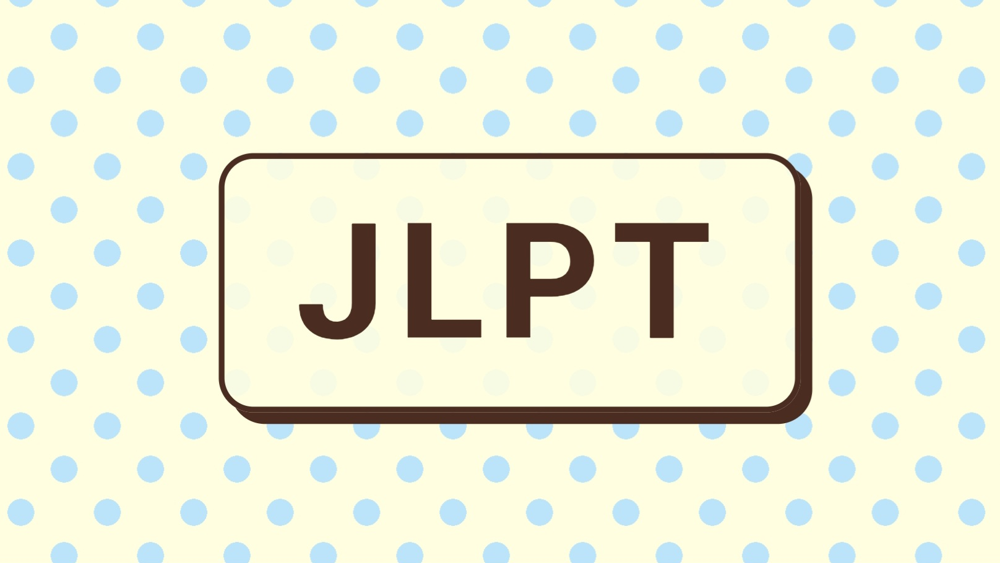

🇯🇵 เกี่ยวกับฉัน
ฉันเป็นนักเรียนชั้นมัธยมศึกษาปีที่ 6 ที่มีความหลงใหลในภาษาและวัฒนธรรมญี่ปุ่น ปัจจุบันกำลังมุ่งมั่นพัฒนาทักษะด้านภาษาญี่ปุ่นเพื่อเตรียมพร้อมสู่การเรียนต่อในระดับมหาวิทยาลัยค่ะ
นอกจากการเรียนในห้องเรียนแล้ว ฉันยังชอบท้าทายตัวเองด้วยการฝึกฝนภาษาญี่ปุ่นผ่านสื่อต่างๆ ทั้งการอ่าน การฟัง และการลงมือสร้างสรรค์สิ่งใหม่ๆ ด้วยตนเอง เว็บไซต์แฟ้มสะสมผลงานนี้จึงเป็นอีกหนึ่งความตั้งใจที่ฉันอยากจะแสดงให้เห็นถึงความมุ่งมั่นในการพัฒนาทักษะรอบด้าน เพื่อพร้อมเปิดรับทุกการเรียนรู้ในระดับมหาวิทยาลัยค่ะ
✨ ผลงานและความภาคภูมิใจ



Language
การทดสอบวัดระดับภาษาญี่ปุ่น (JLPT)
มุ่งมั่นศึกษาและท้าทายตนเองด้วยการเข้าทดสอบวัดระดับความรู้ภาษาญี่ปุ่นสากล เพื่อวัดประสิทธิภาพการเรียนรู้และนำผลคะแนนมาเป็นแนวทางในการพัฒนาทักษะทางภาษาต่อไป